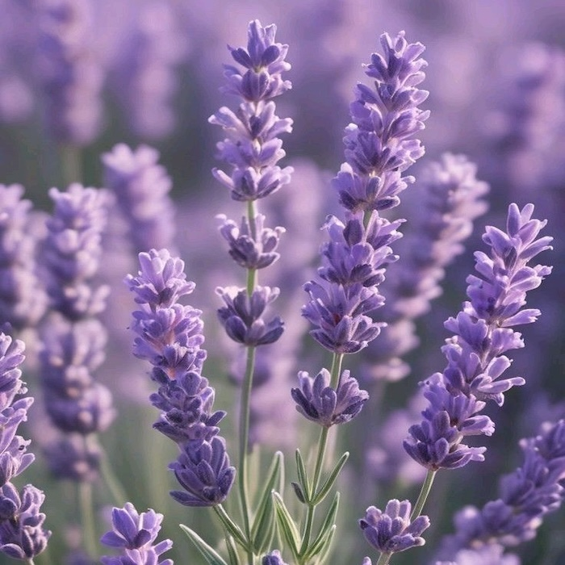

Thoughtful | Peaceful | Reflective | Balanced

There is a serene, calming energy about you
that makes people feel safe to be their authentic selves. You value quiet moments,
emotional depth, and a peaceful environment over chaos and noise. You are impactful on others without needing to be the loudest in
the room; like the soothing scent of lavender, your profound empathy and gentle spirit
heal and comfort those around you.
Fun fact: Ancient Egyptians used lavender in
the
mummification process, and Romans added lavender to their baths.
Floriography: Lavender
symbolizes
serenity, grace, and devotion. It has long been associated with
silence and calm, and was historically given as a token of affection and a wish for the recipient's
tranquility.
Origin: Native to the Mediterranean region
Best conditions: Full sun, dry and
well-drained soil, warm and rocky terrain